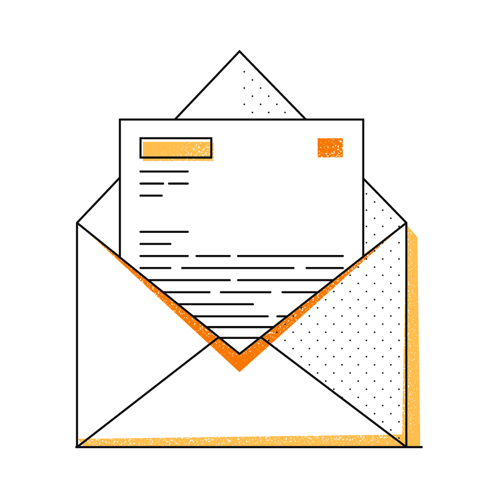

Introduction
Planning, management, marketing and advocacy are part of the librarian's everyday work responsibilities. These four actions are often completed among a group. Each step is separate: "planning" refers to preparing and outlining the steps needed to complete a library project; "management" refers to the leadership needed to pull the library project forward; “marketing” refers to the outreach and communication done to get patrons involved in the project; and “advocacy” refers to the support shown for a project upon its completion. Together, these four steps combine to connect library staff to their visitors and encourage them to use their library's resources.
As a student, I learned how to plan, manage, market and advocate for various library programs and services. As a library assistant and student chapter board member, I performed each of these actions on a regular basis. Between school, extracurriculars and work, I have greatly improved my understanding and experience with these four tasks, and see them as a larger process, with an end goal of motivating visitors to reach out and grab the information and services they need.
Finally, in the LibLearnX conference, I learned that librarians still discuss ways to improve at these tasks, even with years of experience. The following sections highlight my involvement in planning, management, marketing, and advocacy in the library.
Planning
In the ALA student chapter, we spend most of our time planning. The events we put on last hours, but the planning going into them to make them happen goes on for months before. When our project planning is extensive, thorough, and started early, the work needed to complete the project feels easier and more manageable.
Management
In the SJSU MLIS program, I learned how management can change the course of a library project. Since effective management requires experience in the library and experience as a manager, I have turned toward my MLIS education for lessons and examples. In researching the Mzuzu University Library fire, I learned how errors in management led to extensive damage to the library’s collection and infrastructure. From this, I have learned that quick responses, management guides, and proper delegation of tasks is essential to good management.
Marketing
Marketing is essential to the success of a library project, because a project cannot happen without visitors participating in it. Additionally, sharing an upcoming event or service with potentially benefiting patrons is a positive action and when done effectively, can help patrons feel included and supported in their community. Marketing reflects on the library itself, and can give potential future patrons an image of what the library is like.
Within the CNU library, I work with several different marketing mediums: social media, paper marketing, and word-of-mouth. By combining multiple different types of marketing, I can ensure I reach as many students as possible. Only some follow our library Instagram page, but many more walk through the library and see the posters I put up. And when I talk to professors, and they promote library services in their classrooms (or even require students to attend for credit) then even more students are introduced to our library services. By doing all three, I can get a sense of what is most effective, how each marketing form is different, and what students respond to most.
Advocacy
To show advocacy is to actively support an ongoing or completed service. When advocating for library services, it is important to do so in a helpful, open way that creates a direct benefit for the advocated service. In this way, advocacy can be similar to marketing. The major difference between the two is that marketing directly benefits the person doing the marketing, while advocacy is intended to benefit someone else.
I learned how to advocate for my library's programs in order to instill in students and faculty a sense of consistency, dependency, and respect in regards to their library. While working in a library, I befriended other libraries through social media, and advocated for them on my Instagram page. And since I work at a health sciences college, I find it extremely important to advocate for the health sciences and local health science communities, so that my students can see where their education can lead them. Advocacy is a great way to remind yourself why different library resources and external resources are beneficial to others, and why you are grateful for them.
Evidence
Planning:
 ALASC October 2021 agenda.Here is one of our ALA student chapter monthly meeting agendas. It is an example of how our group discusses upcoming events and how we start the planning process early.
Management:
Mzuzu University Library fireHere is a research paper I wrote in INFO 259, Preservation Management. In this paper, I discuss the Mzuzu University Library fire, and critique the management of the library's preservation and restoration process. As I do not have management experience yet, this assignment is the closest I have gotten to real management. I hope to fill this section with management experience, someday.
Marketing:
CNU Library Instagram page.Here is the CNU library’s Instagram page. I created our account in January 2021, and have since made all of the posts on it since then. Our posts include promotions for on campus events, library events, library collection updates, database tutorials, local community showcasing, health heroes from history, important historical events in health science, and career planning resources.
In case you can’t see the Instagram page, I have linked individual Instagram posts below (which are specifically related to marketing library services):
 Library workshop - Research strategies!
Library workshop - Research strategies!
 Library workshops - Writing and formatting tools!
Library workshops - Writing and formatting tools!
 New database for dental students!
New database for dental students!

Advocacy
Here are Instagram posts specifically advocating for:
- External library resources
- Local health professionals
 South Sacramento
South Sacramento